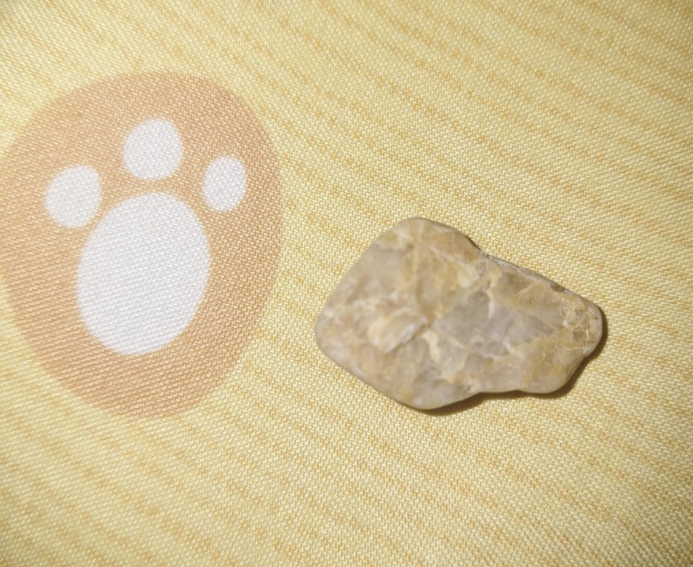
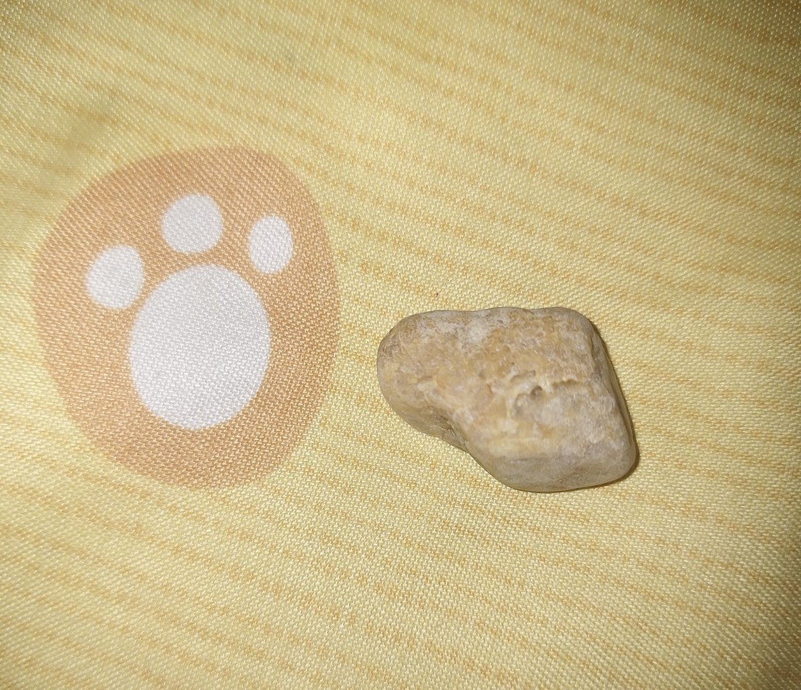
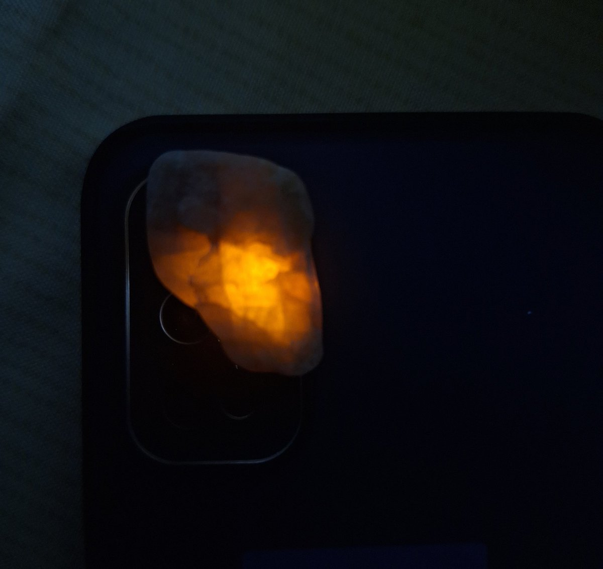

水母雨🍥
@ena1_mizuki
@Azkawayi 就是石英单矿物吧，入侵的石英脉里面经常会有受力形成的节理，看起来像砂岩是风化导致的，而海滩捡到大块长石堪比中奖（太不耐风化了）



黑暗高松燈🐧🌷
@Azkawayi
在海邊撿的石頭
背面像砂岩，但是断面（非新鲜）有类似石英一样灰白有油脂光泽的透光矿物，本來以為是玉髓，但是在背面用手电筒光照射可以看见内部理解，這是什麼石頭啊？ https://t.co/w2tjuKC3sP